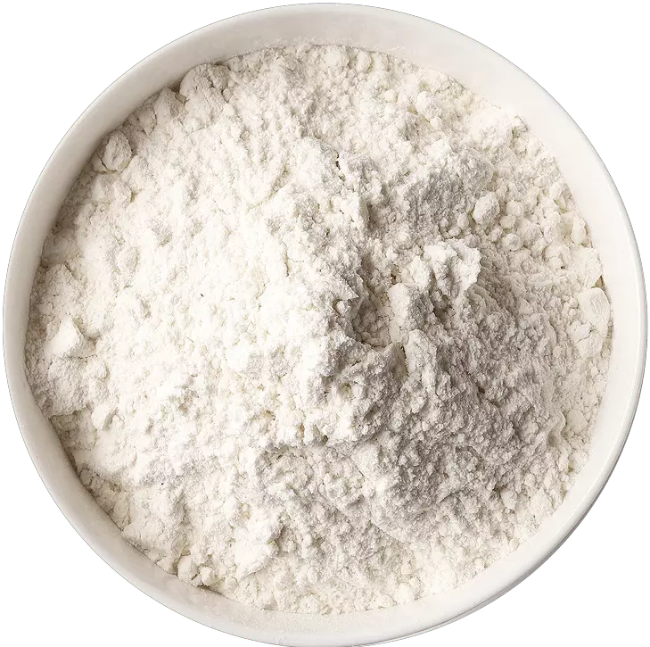

Aplicaciones
Industria
panificadora
panificadora

Industria panificadora
Debido a su capacidad para retener agua, la goma de tara se puede utilizar en productos horneados para prolongar su frescura y vida útil.Salsas

Salsas
Por su elevada viscosidad, la goma de tara imparte una textura más espesa y sabrosa a productos como pudines, jaleas, dulces, sopas, salsas y cremas. También estabiliza emulsiones , creando y manteniendo interacciones estables entre sustancias insolubles, como el aceite y el agua, en productos como salsas y aderezos.


Industria
láctea
láctea
Industria láctea
En postres lácteos y helados se puede utilizar para mejorar la textura reduciendo la formación de cristales de hielo. Además aporta diferentes perfiles de textura (sensación cremosa en la boca, textura suave y fina), espesamiento, estabilización de proteínas, estabilidad durante la vida útil y optimización de costos. Tiene sinergia con otras gomas e hidrocoloides como Locust Bean, Guar,Xanthan, CMC, Carrageninas, Alginatos y Pectina.
Bebidas
Bebidas
La goma de tara es perfecta para aplicaciones que requieran un poder espesante menos pronunciado, como bebidas vegetales y yogures.
Industria
cárnica
cárnica


 Dirección
Dirección Correo
Correo Télefono
Télefono Celular
Celular